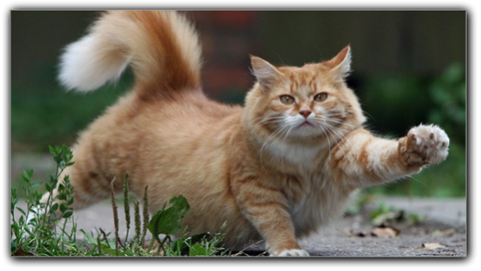
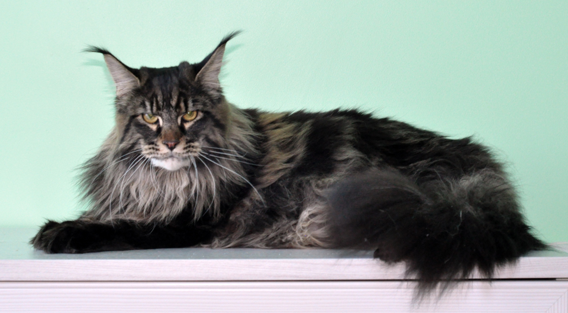
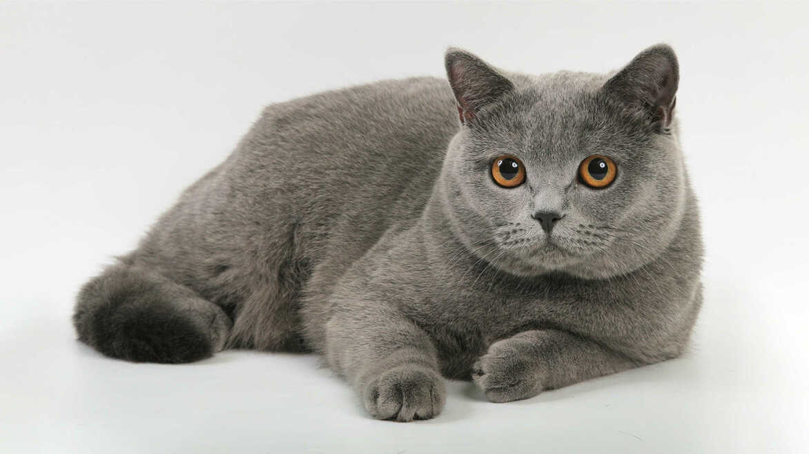
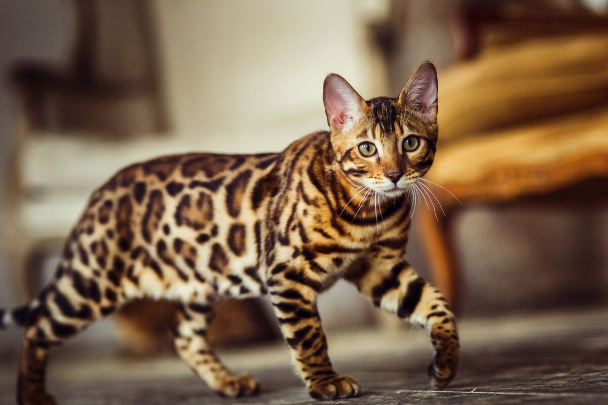

Цікаві факти про котів

- Кішка за своє життя може мати більше 100 котенят.
- Одна пара кішок і їх нащадки за 7 років можуть “виробити” 420 000 котенят.
- У котів потіють лише подушечки лап.
- Малюнок поверхні носа котів унікальний, як і відбиток пальця людини.
- Котяче вухо повертається на 180 градусів. У кожному вусі у кота 32 мускули, щоб управляти вухом вони
використовують дванадцять або більше м’язів.
3 найпопулярніших порід кішок у світі
Мейн-кун — $1 000
Мейн-кун витривала й невибаглива порода, за що й стали улюбленицями моряків. Походження їх невідоме. Імовірно,
вони з'явилися від схрещування місцевих короткошерстих і завезених торговцями з Малої Азії довгошерстих кішок.
Свою назву одержали завдяки місцю походження, а також, можливо, завдяки звичкам і зовнішній подібності з єнотом.
Багато кішок цієї породи було представлено на першій виставці в Нью-Йорку в 1860 році. У 1953 році був утворений
Клуб любителів мейнських єнотових кішок, що займався популяризацією і організацією виставок цієї породи.
Стандарт породи більшістю клубів та об'єднань визнаний у 1983 році. Сьогодні мейнські кішки добре відомі й
розводяться в багатьох країнах.

Британська короткошерста кішка
Британська короткошерста є однією з найдавніших порід, хоча племінні книги, куди заносяться найкращі плідники,
ведуться всього близько 100 років. Офіційно визнана більшістю фелінологічних організацій у 1984 році. Зараз
поширена в усьому світі й користується великою популярністю.

Бенгальська кішка (домашня)
Виникла порода завдяки старанням студентки Жанни Міль, що жила в Аризоні й хотіла вивести породу домашніх
кішок, зовні схожих на диких.
Родоначальниками породи є дика бенгальська кішка Felis Bengalensis (звідки порода й одержала свою назву) й
американська короткошерста. Надалі в становленні породи брали участь кішки інших порід: єгипетські мау, бурмеси
й різні кішки із забарвленням табі. Знадобилося майже 22 роки на те, щоб нова порода затвердилася. У 1990-91 pp.
нова порода була допущена до участі в чемпіонатах.
Поступово порода набуває популярності. Представники породи завезені до Європи, але оскільки вони поки що там
рідкісні, є одними з найдорожчих.
